Shika, Ishikawa: things to do, food and stays
Shika · Ishikawa
Shika
Highlighted on the Ishikawa map.

Stay
ハートランドヒルズｉｎ能登１５アスレチックの家
Hatorandohiruzu in Noto 15 Asurechikku No Ie
Inn in Yakurataniko, Shika with pet-friendly rooms.
ペンションクルーズ
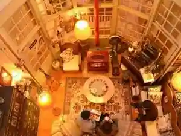
Pension Kuruzu
コテージ デジャヴ＆ハーベスト
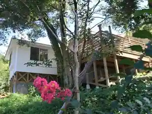
Cottage Dejavu & Habesuto
ハートランドヒルズｉｎ能登10ドッグランのある家
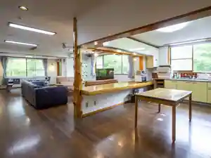
Hatorandohiruzu in Noto 10 Dogguran Noaru Ie
Inn in Yakuratanina, Shika with pet-friendly rooms.
ハートランドヒルズｉｎ能登１６和モダンの家
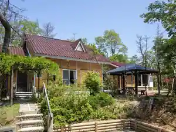
Hatorandohiruzu in Noto 16 Wa Modan No Ie
Inn in Machihe, Shika with pet-friendly rooms.
ハートランドヒルズｉｎ能登8メルヘンの家
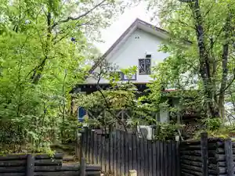
Hatorandohiruzu in Noto 8 Meruhen No Ie
Inn in Machihebu, Shika with pet-friendly rooms.
ハートランドヒルズｉｎ能登6研修室のある家
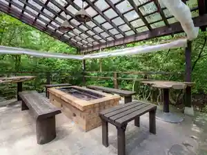
Hatorandohiruzu in Noto 6 Kenshushitsu Noaru Ie
Inn in Machihe, Shika with pet-friendly rooms.
家族コテージ ノトイエ
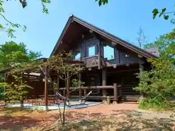
Kazoku Cottage Notoie
Cottages in Machihe, Shika with pet-friendly rooms and family-friendly stays.
ハートランドヒルズｉｎ能登3ひのきの香る家
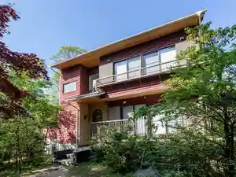
Hatorandohiruzu in Noto 3 Hinokino Kaoru Ie
Inn in Machihebu, Shika with pet-friendly rooms.
ハートランドヒルズｉｎ能登1風見鶏の家
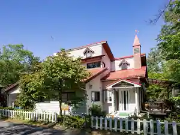
Hatorandohiruzu in Noto 1 Kazamidori No Ie
Inn in Yakuratanirabu, Shika with pet-friendly rooms.
ハートランドヒルズｉｎ能登１２数寄屋造りの家
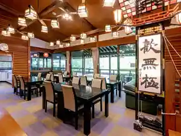
Hatorandohiruzu in Noto 12 Sukiya Tsukuri No Ie
Inn in Yakuratanimu, Shika with pet-friendly rooms.
ペンション夕凪
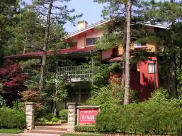
Pension Yunagi
Dining
廻転寿し 西海丸
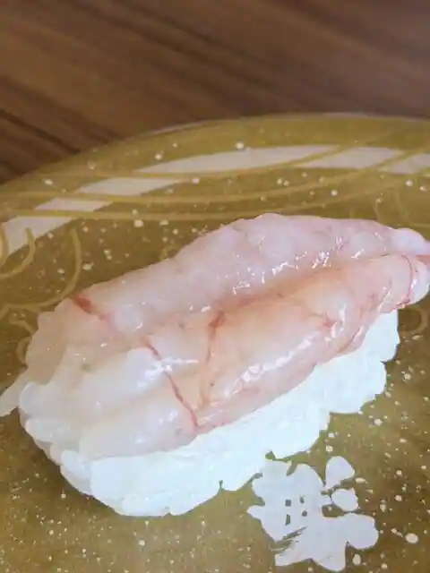
Kaiten Hisashi Shi Saikai Maru
道の駅 とぎ海街道
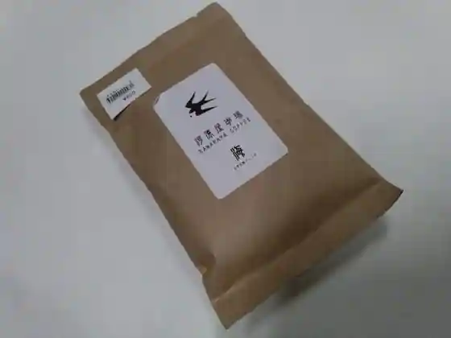
Michi No Eki Togi Umi Kaido
てらおか風舎 富来本店
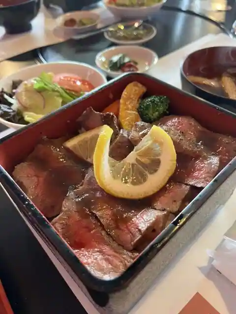
Teraoka Kaze Sha Togi Hon
いこいの村 能登半島
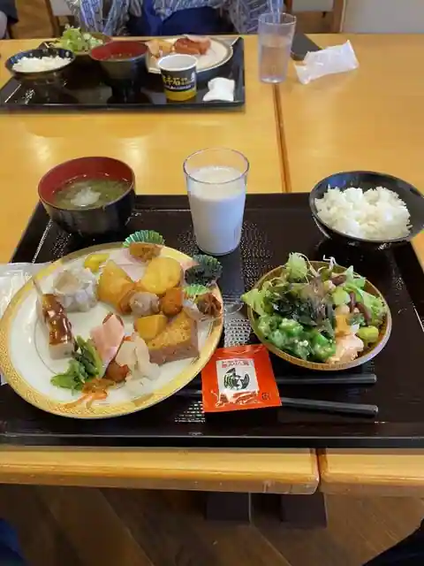
Ikoino Mura Noto Han Shima
市左衛門
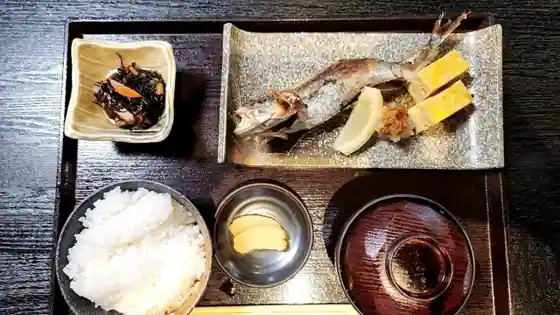
Ichizaemon
だるま寿司
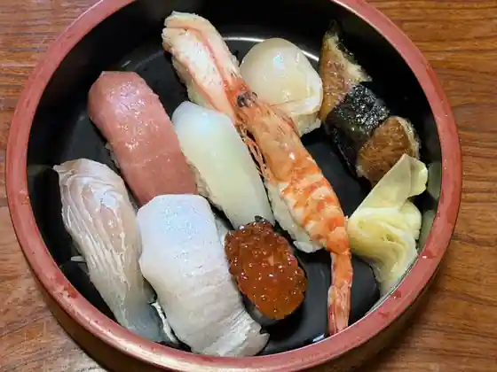
Daruma Sushi
旅の駅巌門
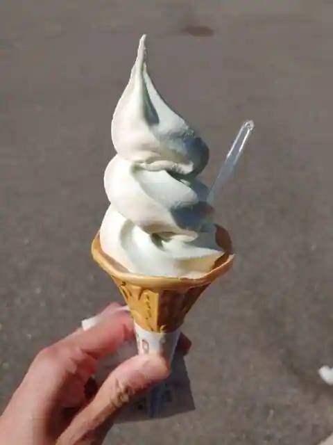
Tabi No Eki Gan Mon
ころ柿の里 しか
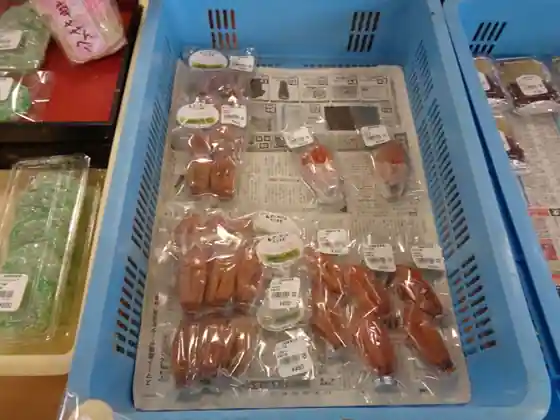
Koro Kaki No Sato Shika
いさりび菊や
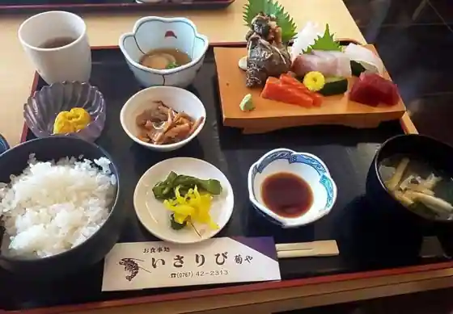
Isaribi Kiku Ya
海の宝石蜂屋

Umi No Hoseki Hachiya
ドライブインのうみ
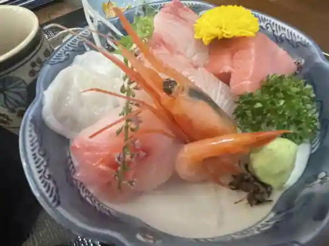
Doraibuin Nomi
ロードパーク 女の浦
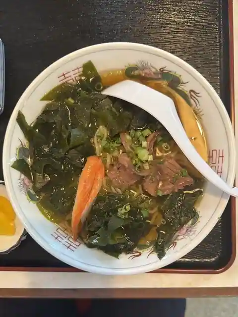
Rodo Park Onna No Ura
らーめん和
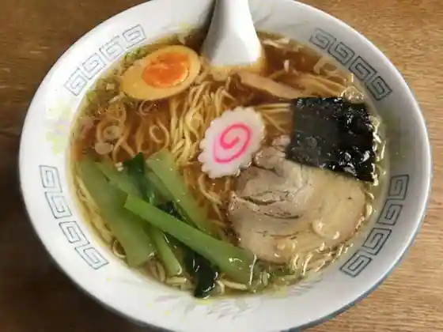
Ramen Wa
車座
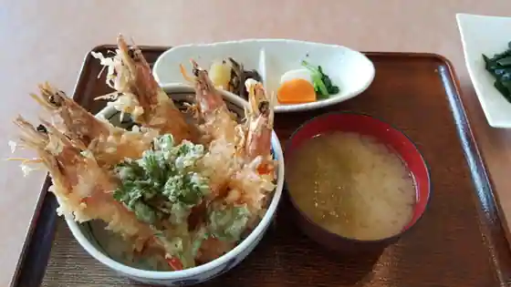
Kurumaza
西山パーキング（下り）レストラン
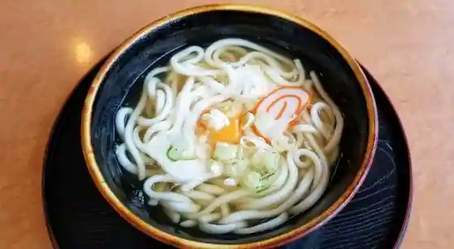
Nishiyama Pakingu (Kudari) Restaurant
西山パーキングエリア（上り線）
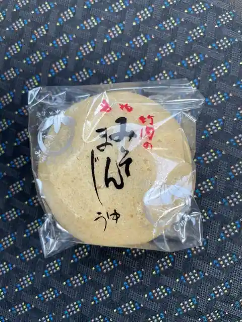
Nishiyama Pakingueria (Nobori Sen)
シュクレ・プラージュ
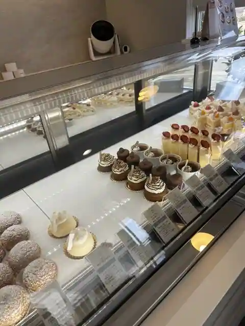
Shukure Puraju
シ・オン
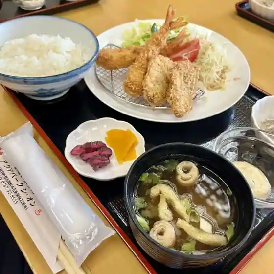
Shi On
ビストロ イグレック
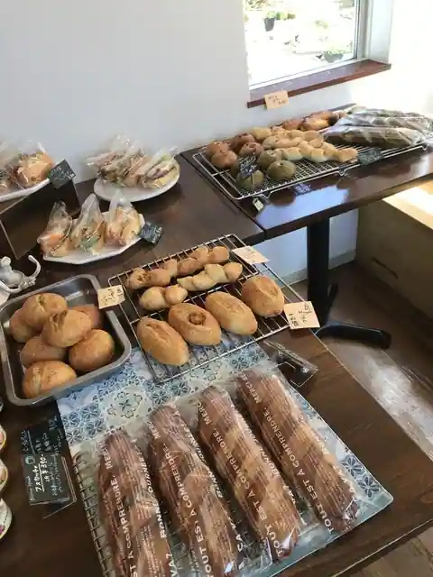
Bistro Igurekku
花や249
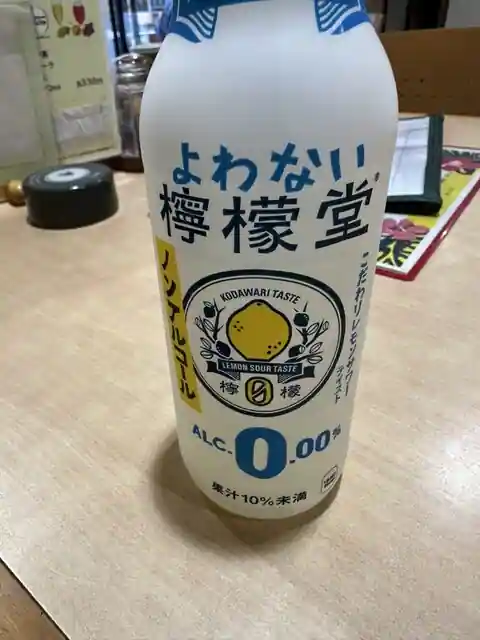
Hanaya 249
能州富来の味処 久治
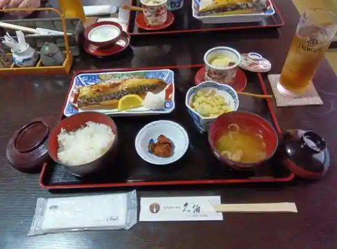
No Shu Togi No Ajidokoro Kyuji
みそまんじゅう本舗 竹内 志賀町店
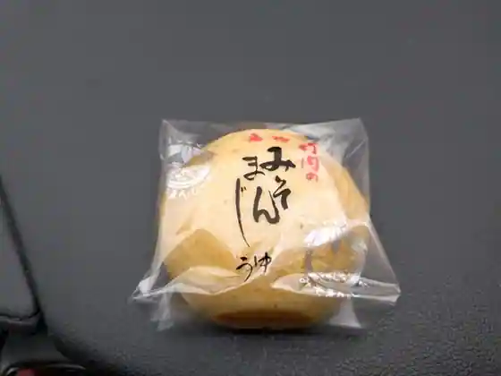
Misomanju Honpo Takeuchi Shigacho
宮本菓子舗
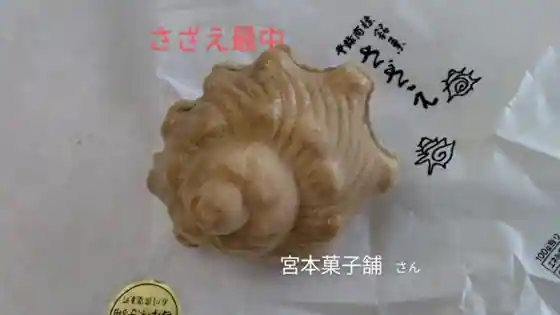
Miyamoto Kashi Ho
ラーメン太る 高浜海の家店
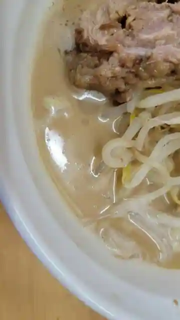
Ramen Futoru Takahama Uminoie
Sights
Sekaiichi Nagai Benchi

Gan Mon
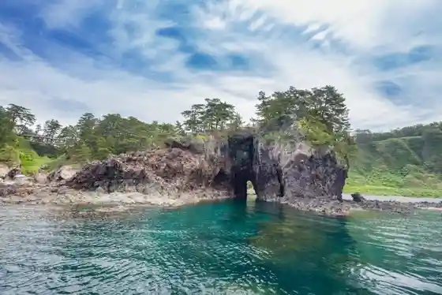
Yase no Dangai
Roadside Station Togi Umi Kaido
Noto Kongo
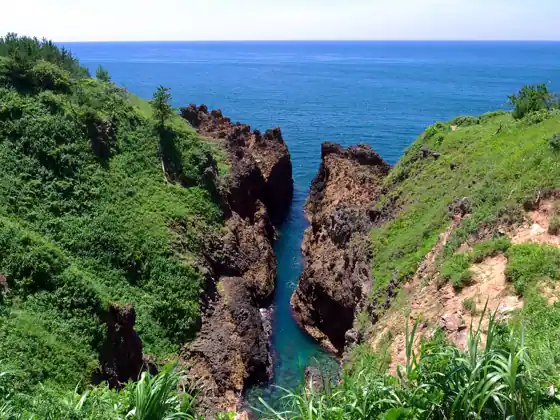
Roadside Station Koro Kaki no Sato Shika
Noto Resort Eria Masuho Ura
Masuho Ura Coast
Kigu Iwa
Akua Park Shi On
Fukura Minato
Yoshitsune no Fune Kakushi
Kyu Fukura Lighthouse
Heike
Noto Kongo Yuransen
Oshima Campground
Penshon & Kafe Kuruzu
Taka no Su Iwa
Taka Tsume Yama
Ganpeki no Haha no Hi
Noto Resort in Misawa
Arisu Kan Shika
Hengyo Tera
Matsumotoseicho Kahi
Matsuo Shrine
Goban Shima
Koshimaki Jizo
Tsubono Norihisa Yamada Aki Kahi
Rai Nyuji no Mizubasho
Noto Genshiryoku Center
Ishitsumi Rokkaku Jizo to
Kano Sakujiro Bungaku Hi
Saikai Suisan
Shika Town Hall